Grundlæggende
Indhold
Beskrivelse
Grundlæggende indhold var et tema på 4 uger, hvor vi lærte omkring digitale indholdsløsninger. Det nye her, var læring om video produktion, fotostil og forretningsstrategi.
Den helt store case i dette tema, var et gruppeprojekt, hvor vi skulle finde en virksomhed, som vi syntes trængte til et redesign, besøge virksomheden for at lave interview, video og tage billeder. Vi fandt frisøren HairLoungeCph, som gerne ville være med i projektet.
Jeg har primært været med ind over idé generering, design, billederedigering, wireframe og prototypen.
SCRUM og Trello
I dette tema, lærte vi om en god måde at holde styr på et gruppeprojekt. Hver morgen holdte vi et SCRUM møde over teams, hvor vi evaluerede gårdagens arbejde og uddelte opgaver som manglede at blive udført.
Opgaverne blev uddelegeret via trello, som gav os et godt overblik over hvem der lavede hvad.
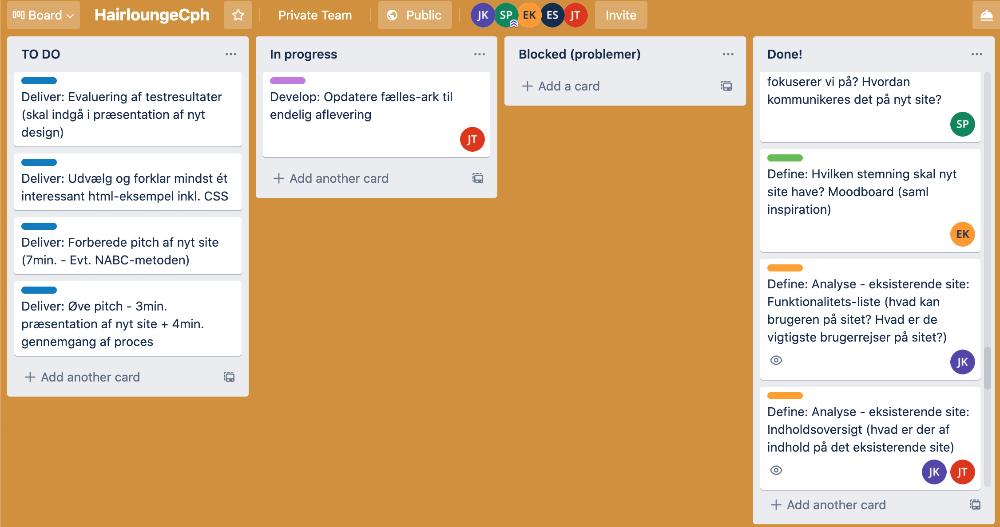Analyse
Hvad ønsker de?
- At fremstå som en familiesalon
- Hyggelig og god stemning
- At vi beholder den grønne farve
- At beholde logo
Vigtigste brugerrejse
Den vigtigste brugerrejse er "book en tid". Hele pointen med denne hjemmeside, er at få folk til at booke en tid, så det vil være vores primære formål.
Nuværende site
Vi syntes ikke at deres nuværende site, helt ligger op til de ting de ønsker at udstråle.
Idé / Redesign
Vores tanker
Vi ønskede at skabe:
- Et mere indbydende site
- Gøre det mere eksklusivt
- Fange den brede målgruppe
- Gøre sitet konkurrencedygtigt
Moodboard
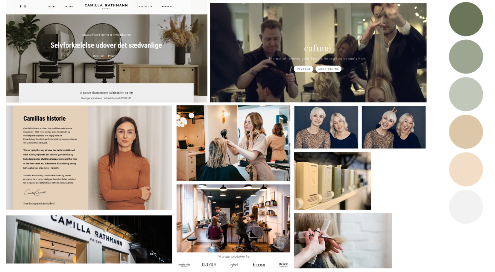Billedestil
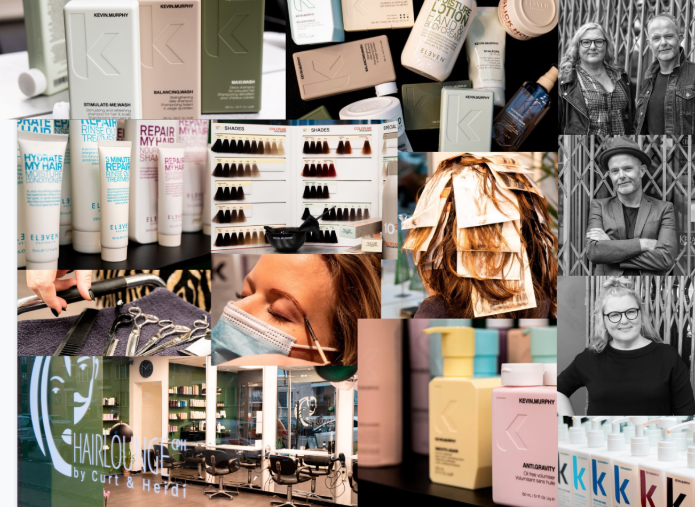Photoshop
Alle billederne er taget i RAW format, og stort set kun redigeret i photoshops RAW-konverter.
De originale billeder var meget mørke og kedelige at se på. Det er rettet op ved at tilføje mere lys og noget kontrast. Derudover har jeg været inde og skrue op for farverne – det giver et mere appetitligt udseende.
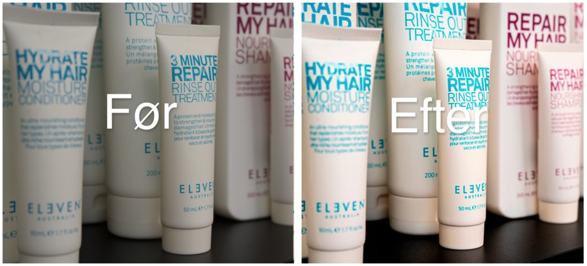Wireframe
Vi havde nogle grund punkter som vi syntes var vigtige forhold til siden skillet.
- Minimalistisk / overskueligt.
- Rød tråd gennem sitet.
- Bygges op i sektioner.
- Fokus på brugerrejsen.
Prototype
Vi satte en prototype op i Adobe XD, for at få en klar forestilling om den røde tråd på sitet, hvordan vi hver især skulle lave stylingen til vores sider.
Forbedringer
Vi synes selv at vi er kommet frem til nogle gode forbedringer.
- Priser er blevet bygget op i kolonner, det skaber et bedre overblik.
- UI elementer med microcopy, bliver gentaget igen og igen.
- Stemningsbilleder rundt omkring på sitet.
- Stor dobbelt footer med vigtig info.
Min HTML og CSS side
Jeg fik siden Behandlinger, som skulle indholde en pris oversigt.
Layout diagram
Jeg har bygget mit skellet i html op, ud fra det layout diagram, som en anden i gruppen har lavet.
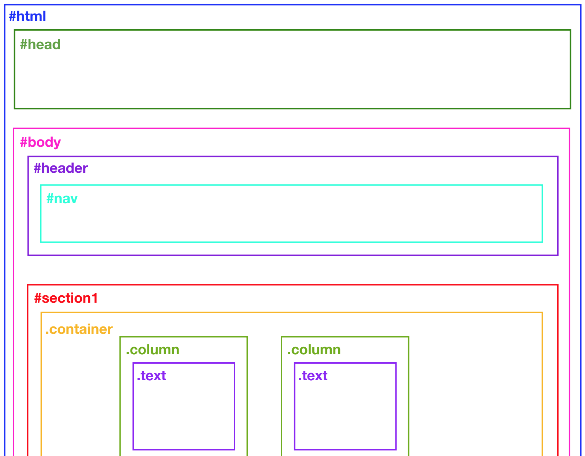Tabel
Oversigten over priser, har jeg bygget op med en tabel. Det er ikke noget vi har haft undervisning i, men noget jeg vidste eksisterede og derved googlede mig frem til.
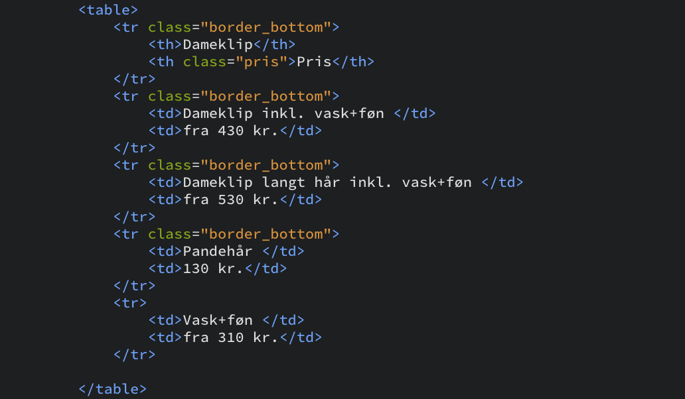Som HTML
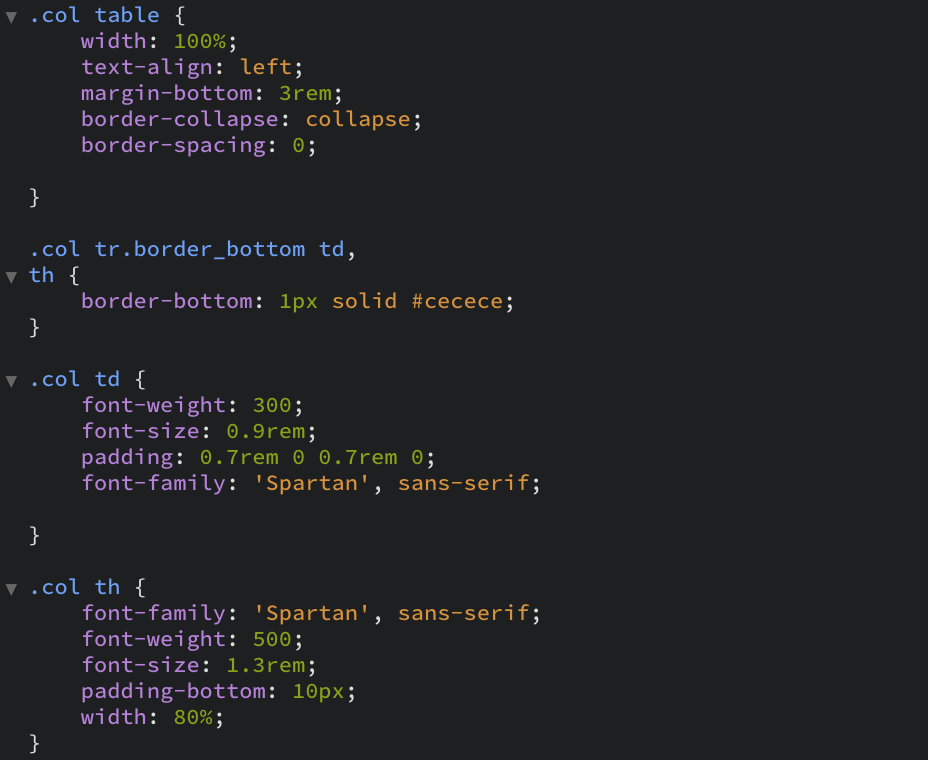Som css
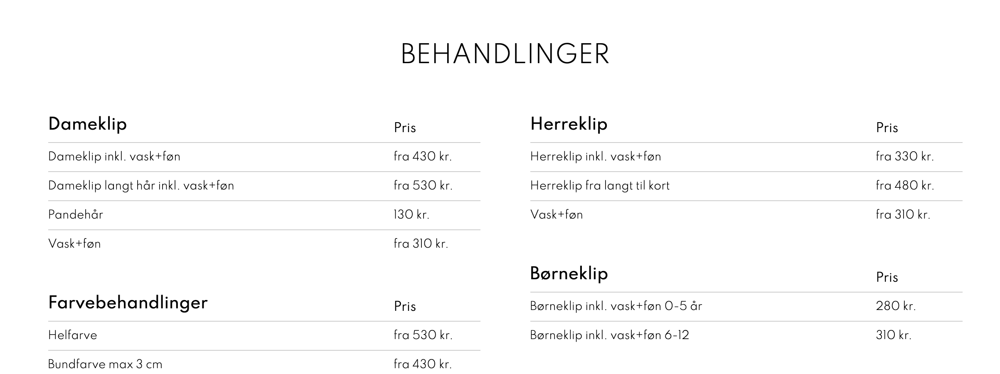Visuelt
Lighthouse
Vi kørte en lighthouse test over vores site, via google chrome. Lighthouse er et værktøj som kan hjælpe en med, at se hvad der kan forbedres.
Forbedringer
For at opnå vores "efter" billede, måtte vi optimere SEO ved at lave en meta description i head, og alt på img. Vi fik også optimeret vores billeder, så siden loader hurtigere.
Før
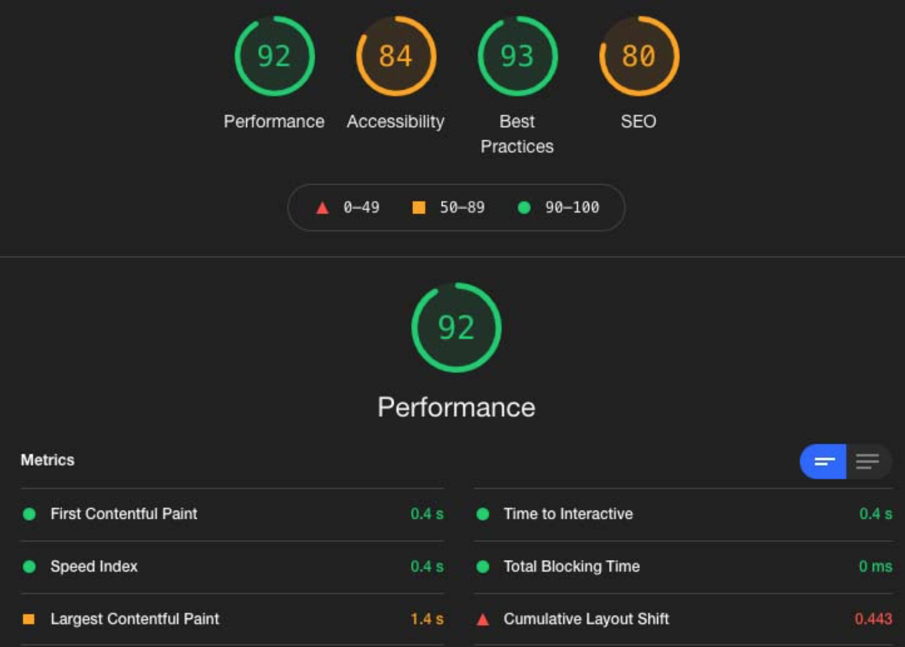Efter
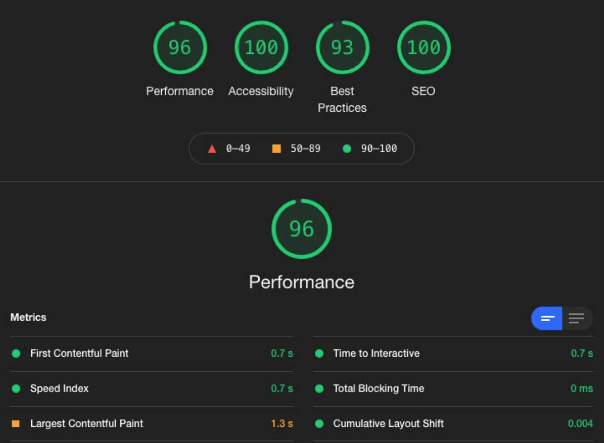Video
Storyboard
I fællesskab blev vi i gruppen enige om, hvilke scener vi ønskede vores film skulle indeholde. Ud fra nettet, kunne vi fornemme hvilke rum salonen havde, og på den måde kunne vi skabe idéer omkring hvad vi ønskede. En fra gruppen tegnede det ned som et storyboard.
Vi ønskede en blanding af skæve perspektiver, closeups, salonen udefra og glade medarbejdere.
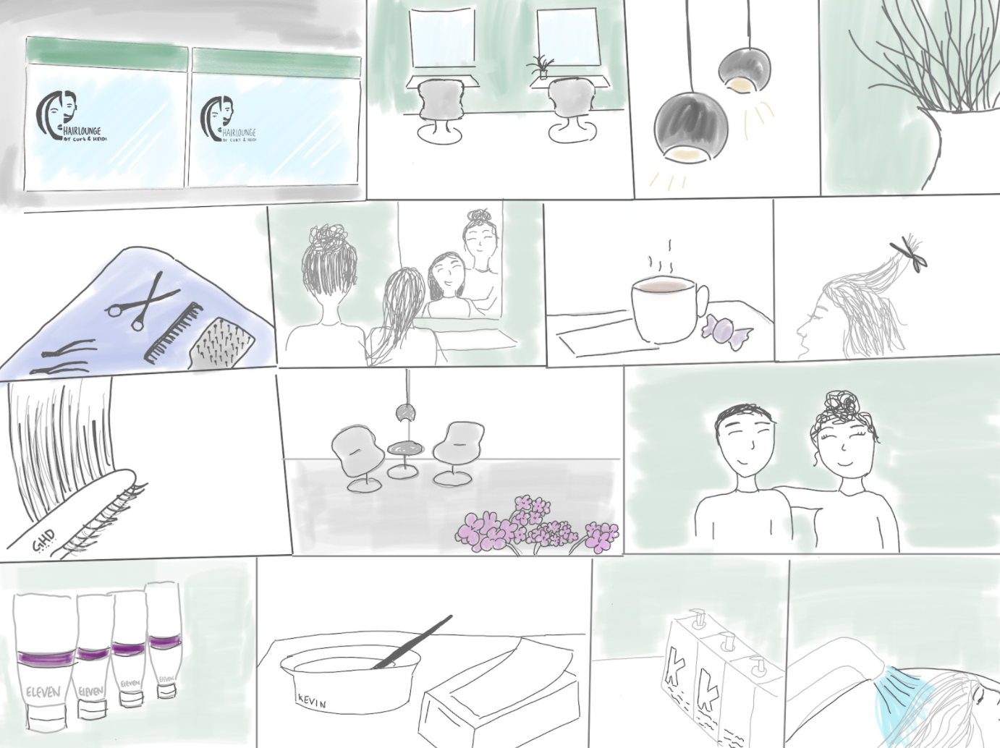Premiere Pro
Vi fik under dette tema, undervisning i, hvordan man klipper video i Adobe Premiere Pro. Vi var godt forberedte til videoen til HairLounge, da vi havde fået opgaver som mindede om, tidligere i forløbet.

Lyd
Vores lyd er optaget via en knaphulsmikrofon tilsluttet en mobil. Den er ligesom videoen også blevet klippet til i Premiere Pro, og lagt ovenpå videoen.
Derudover har vi tilføjet lidt baggrundsmusik, for at skabe en stemning.
Se den færdige video med interview
BERT test
Vi oprettede en formular på google, hvor vi fik omkring 20 personer til at svare på vores BERT test.
- 1. er hvordan folk opfatter den nuværende hjemmeside.
- 1.2. er der hvordan vi ønskede at folk skulle opfatte vores redesign.
- 2. er hvordan folk opfattede vores redesign.
Som man kan se på billedet, kom vi rigtig godt i mål med vores ønsker.